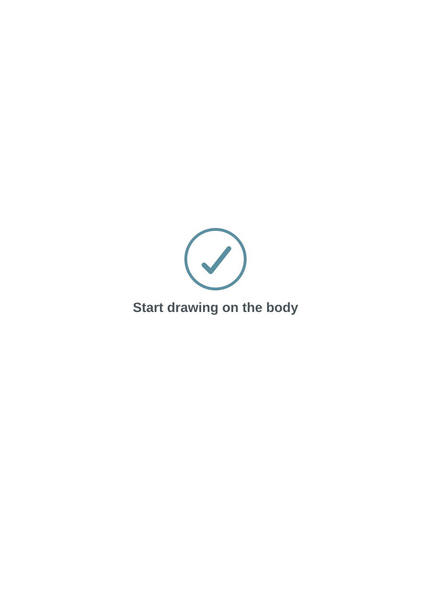
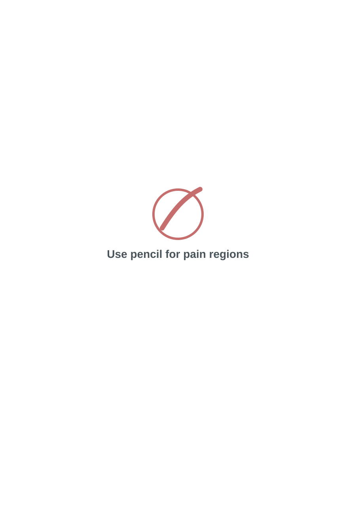
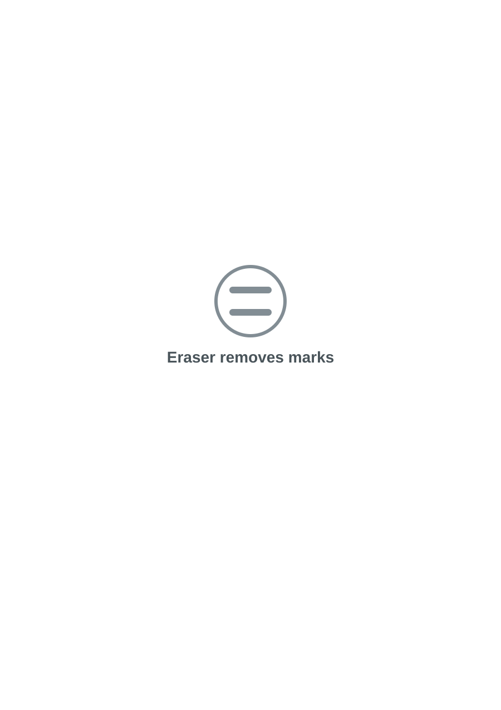
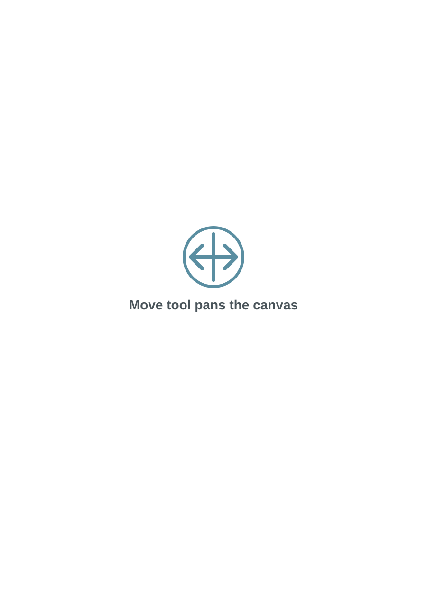

Select Template
Use File to select the template folder. SeePainX also ships with built-in templates and masks so users can start without manually copying template files.
SeePainX 1.0 documentation
SeePainX helps researchers organize pain drawing data, normalize scans to a common template, collect structured questionnaire information, generate pain profiles, and run pain drawing classification experiments.
Quick start
Use File to select the template folder. SeePainX also ships with built-in templates and masks so users can start without manually copying template files.
Select the folder containing scans, images, PDFs, SVGs, or other supported pain drawing files. The left window shows the content in a tree structure.
Select the folder where generated files, normalized outputs, reports, and classification results should be saved.
Use the top page buttons to move between Normalize, PainAcquisition, Questionnaire, and Analyze. The side windows remain available across pages.
Core workflow
SeePainX is designed around a complete pain drawing workflow. It can load raw pain drawings, normalize them to a consistent template, collect new pain drawings interactively, save questionnaire responses in spreadsheet form, generate class-level pain profiles, and classify selected or batch-loaded pain drawings.
The app uses a persistent left file tree for Template, Input, and Output folders. Files can be opened into tabbed work areas, and most pages support multiple tabs for side-by-side review.
Pages
Normalize raw pain drawing scans or files using a selected template. The output folder is updated with normalized files and available quality information such as alignment score and mean error when present.
Collect new pain drawings directly on a template. Users can draw, erase, pan, zoom, and save the drawing in app-supported output formats.
Create and complete structured questionnaire forms. Text fields, bullet/checklist items, tables, and image blocks can be used for patient or study information.
Generate pain profiles and run pain drawing classification workflows. Analyze contains tools for profile generation and classification using selected classes.
PainAcquisition hints
SeePainX includes visual hint overlays to help users understand where and how to mark pain areas on the body template. The hints are shown as lightweight overlays and disappear when the user begins interacting with the drawing canvas.




Classification
The classification view supports single-image and batch operation. Users select classes in the model block, optionally enable normalization, and run the classifier. The selected class profiles appear in the output area, and the predicted class is highlighted after classification.
For batch use, leave the image block empty, select the classes and normalization option if required, then run. SeePainX processes the input folder and saves the results as a spreadsheet in the output folder.
Icon guide
Good practice
Keep templates, raw input, normalized output, questionnaire results, and analysis results in separate folders so that the file tree remains clear.
After normalization or classification, inspect sample results and review any generated scores, errors, or spreadsheet entries.
Avoid storing unnecessary personal information in filenames. Use study ids or anonymized identifiers where appropriate.